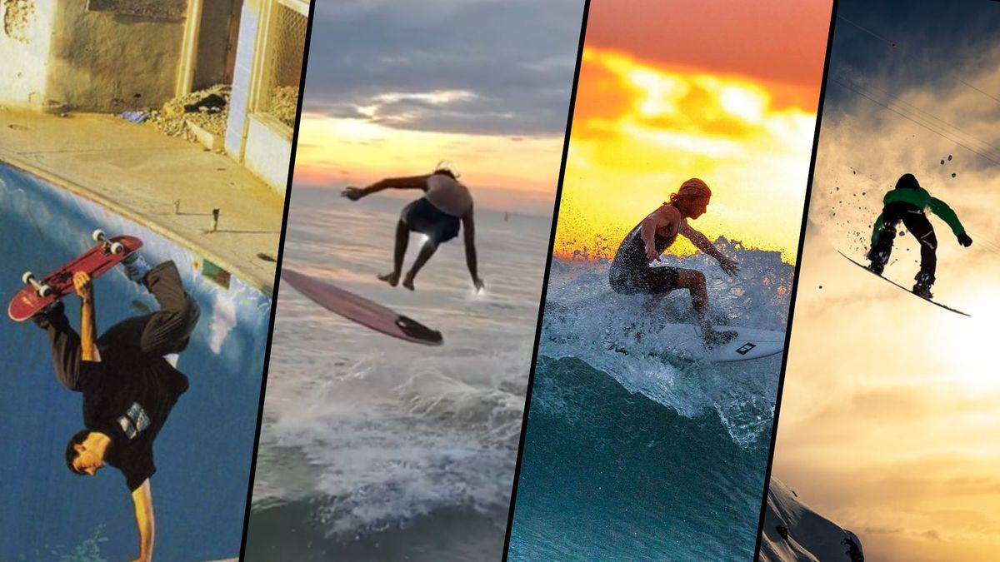

Página não encontrada
404
Spot fora do mapa.
Este link não existe ou mudou de lugar. Volta ao mapa, ao ranking ou à página inicial.

Página não encontrada
Este link não existe ou mudou de lugar. Volta ao mapa, ao ranking ou à página inicial.